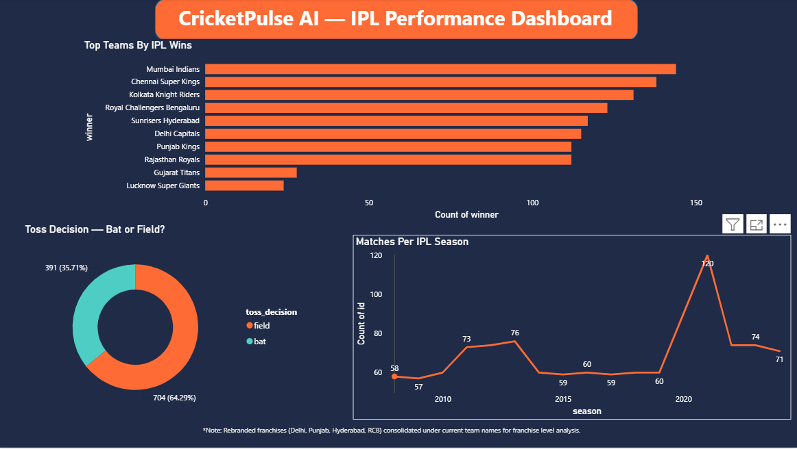
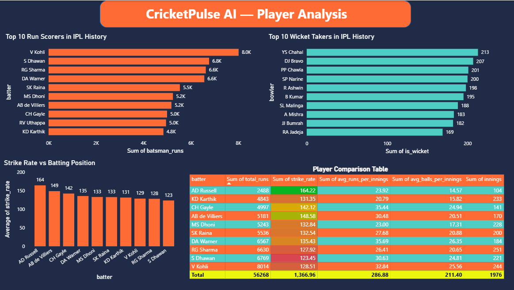
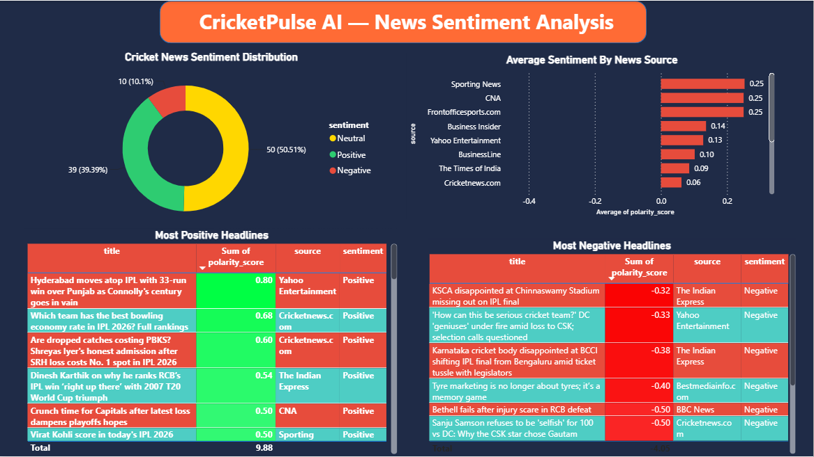
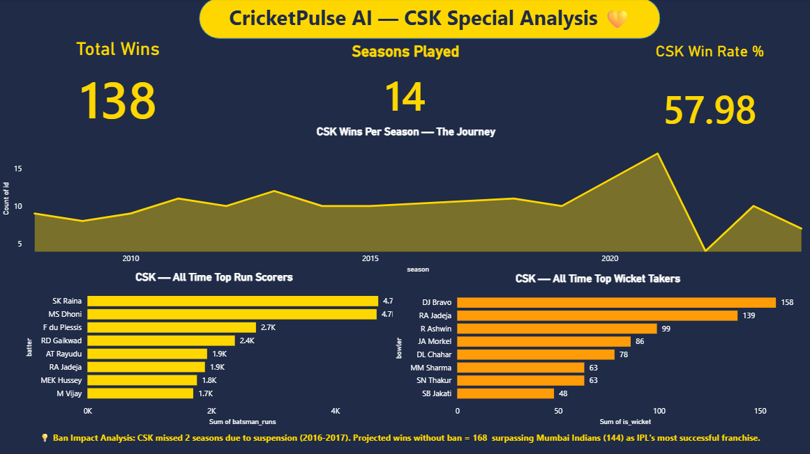
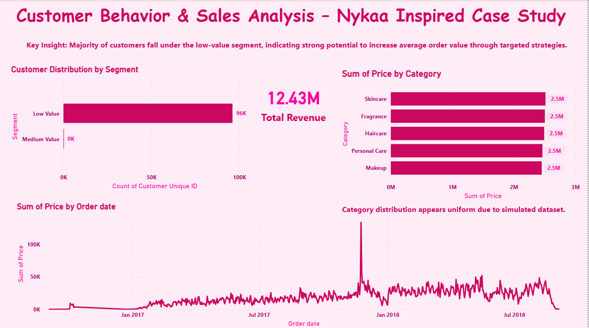

Business & data analyst working in SQL, Python and Power BI. I turn messy numbers into dashboards and decisions people actually use. Open to full-time roles and freelance projects.
Where is my revenue actually coming from?
Which customers are worth my focus?
Why did that number suddenly dip?
What should I fix first?
That's the part I enjoy: turning the mess into an answer you can act on.
I'm a B.Sc. IT graduate (2024) from Mumbai who got hooked on the moment a messy spreadsheet turns into a chart someone can make a decision from. After a business development role at an IIT Bombay-incubated startup, I spent a year building real analyst skills: dashboards, BRDs and full projects, end to end.
I treat every project as if a stakeholder will read it, so my work comes with proposals and documentation, not just charts. And yes, my flagship project is an IPL analytics tool. Professional doesn't have to be boring.
Raw exports turned into a Power BI or Excel report your team opens every week.
Messy data cleaned, analysed and handed back as findings in plain language.
Requirement documents a developer, stakeholder or new hire can actually follow.
A specific question about your sales, ops or customers, answered clearly and fast.
An IPL analytics and news-sentiment system, framed as a data-driven franchise management proposal to BCCI. It analyses 1,095 matches, 260,920 deliveries and 99 live headlines.
Python · pandas · NLP (TextBlob) · NewsAPI · Power BI · BRD
IPL decisions lean on gut feel and box scores; media narrative and sentiment rarely make it into the picture.
Multi-season match and ball-by-ball data plus NLP sentiment on live IPL 2026 headlines (NewsAPI + TextBlob).
4-page dashboard and a 14-section BRD with stakeholder map, As-Is/To-Be and gap analysis, risk register and 6 prioritised recommendations.




A customer behaviour and sales analysis showing that 85%+ of customers sit in the Low Value segment, with a BRD and five prioritised recommendations.
Excel · Power Query · Power BI · BRD
Understanding sales and customer patterns for a fast-growing beauty e-commerce brand.
Segmented customers, wrote a BRD with stakeholder analysis, and built an interactive dashboard.
BRD with 5 prioritised recommendations (AI-driven upsell, loyalty tiers) and a dashboard tracking AOV, CLV and segments.

Found Furniture was loss-making despite high sales; built DAX KPI models for profit margin and MoM growth.
Engagement across platforms and campaign phases, plus the best day and time to post.
Why does Maggi still dominate Indian instant noodles, and how did it recover so fast after the 2015 ban? A research project combining news sentiment, search trends and market share.
Stack: Python, NLP (TextBlob), NewsAPI, Google Trends
Follow along on LinkedIn →Building end-to-end projects (CricketPulse AI, Nykaa-inspired analysis, dashboards) and taking on freelance data work, while looking for a full-time BA/DA role.
IIT Bombay-incubated startup. Generated 20-30 new leads a week and booked meetings with a ~90% conversion rate, which built my stakeholder-first way of working.
Completed a TCS business simulation and built 4 C-suite-ready dashboards that turn complex data into executive decisions.
Graduated with an 8.65 CGPA; SQL, Python and data foundations.
Built beneficiary case stories for anti-human-trafficking initiatives and translated field data for Monitoring & Evaluation reporting.
Hiring for a Business or Data Analyst, or need a dashboard, BRD or data deep dive done properly? I'd love to hear about it.
Email meDownload resume